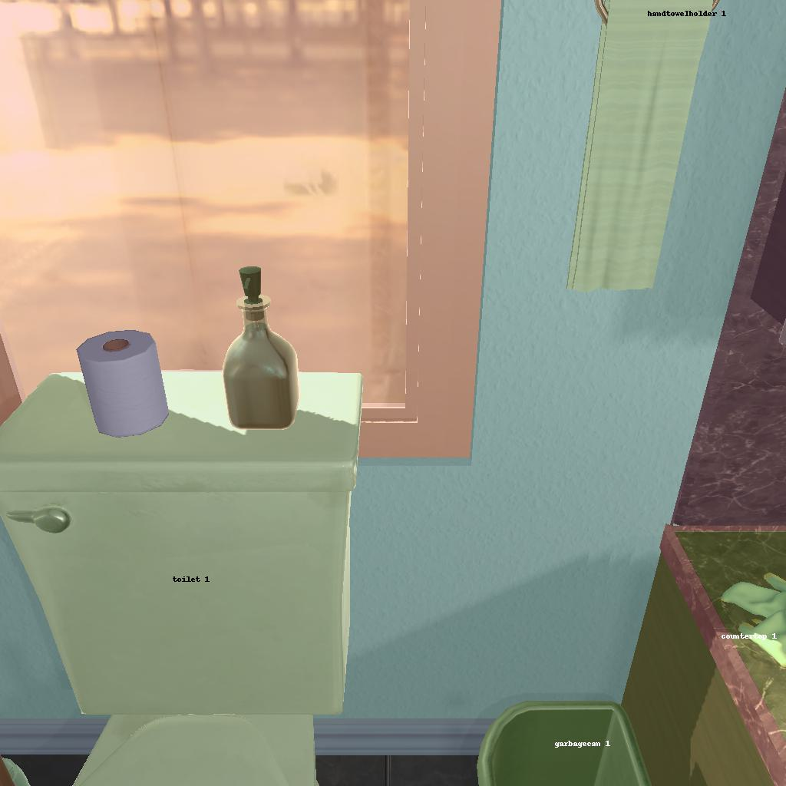

---------------------------------------------------------task: 27---------------------------------------------------------
--------------------------------------------------------------------------------------------------------------------------------------------------------------------
--------------------------------------------------------------------------------------------------------------------------------------------------------------------
Step:--------------------------------------------------------------------------0-------------------------------------------------------------------------------
----------------------------------------
VLM Prompt:
Image1:
**Instruction**
1. Analyze the provided image to identify all visible household objects, focusing on those relevant to the task description "find two soapbottle and put them in garbagecan."
2. Use the analysis of the image and the task hint "The agent must find an object of the desired type, pick it up, find the correct location to place it, put it down there, then look for another object of the desired type, pick it up, return to previous location, and put it down there with the other object." to answer the question: what is the most reasonable action in the choices for the task description "find two soapbottle and put them in garbagecan"?
4. Decide and write the answer using the template: The answer is: (i): , where i is the real number. If there is no desired object in the image, search every place based on **Initial Observation** to find the object. And if no one is exactly correct, choose a similar answer.
**Initial Observation**
You are in the middle of a room. Looking quickly around you, you can see countertop (1), sinkbasin (1-2), sink (1-2), garbagecan (1), drawer (1-2), toilet (1), handtowelholder (1)
**Answer Choices**
(1): go to countertop 1
(2): go to sinkbasin 1
(3): go to sink 1
(4): go to garbagecan 1
(5): go to drawer 1
(6): go to drawer 2
(7): go to sink 2
(8): go to sinkbasin 2
(9): go to toilet 1
(10): go to handtowelholder 1
**Answer**
Let's think step by step by following the instructions.
----------------------------------------
----------------------------------------
Original Response:
First, we need to identify if there are any soapbottles visible in the image provided. In this image, there are no visible soapbottles on or around the toilet, handtowelholder, or in the garbagecan. Therefore, we need to search other places based on the initial observation.
Since we are tasked with finding two soapbottles, it's reasonable to start by checking areas where soapbottles are likely to be stored or placed, such as countertops or sinkbasins near the sink, as these are common places to keep soapbottles. Drawers could also be a potential location if the soapbottles are stored there.
Based on this analysis, the most reasonable action to start with would be to check the countertop or sinkbasins. Between the two options, countertops are more commonly used for placing soapbottles, so it would be more logical to start there.
The answer is: (1): go to countertop 1
----------------------------------------
----------------------------------------
>>> Refine Original VLM Response and Get Pure Action: go to countertop 1
----------------------------------------
-----------------------------------------------------------------
Running time: 13.33889102935791 seconds
Total Money: 13.310240000000004
-----------------------------------------------------------------
-----------------------------------------------------------------
Text Observation:You arrive at loc 0. On the countertop 1, you see a faucet 1, a cloth 1, a soapbar 1, and a soapbottle 1.
-----------------------------------------------------------------
UNSUCCEED